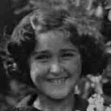

Азнаурьян Нина.Род: Азнаурьяны
Продолжительность жизни: 73
Отец: Азнаурьян Григорий (Грач) Петросович
Мать: Азнаурьян Сирануш Мкртичевна
Брат: Азнаурьян Яков Григорьевич
Сестра: Горгинянц (Азнаурьян) Талита Григорьевна
Муж: Зурабьянц Дмитрий Степанович
Сын: Зурабьянц Степан Дмитриевич
Дочь: Зурабьянц Ольга Дмитриевна
Родилась: 01.10.1931.
Вышла замуж.
Родился сын: Зурабьянц Степан Дмитриевич, 11.07.1957.
Родилась дочь: Зурабьянц Ольга Дмитриевна, 18.11.1958.
Умерла: 10.06.2005.